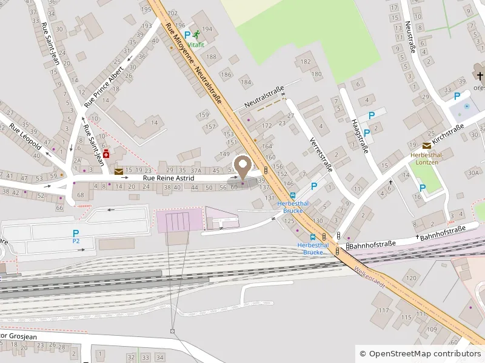

Institut de beauté · Welkenraedt
Révélez votre
beauté naturelle
Une bulle hors du temps où chaque soin est pensé pour vous, dans un cocon de douceur.
Nos univers
Des soins d'exception
Une approche personnalisée, libre à chacun de vivre le soin comme il le ressent.
-
01
Soins du visage
Méthode Physiodermie : analyse précise de la peau et gestuelles signature.
Voir les soins -
02
Soins du corps
Rituels Gemology aux pierres précieuses pour un voyage sensoriel unique.
Voir les soins -
05
Mains & pieds
Manucure, vernis semi-permanent et soins douceur pour des mains soignées.
Voir les soins
Maisons partenaires
Une sélection d'exception
En cabine
-
Physiodermie
Suisse
Soins du visage haute performance, respectueux du microbiome cutané.
-
Gemology
France
Soins du corps aux pierres précieuses : grenat, rubis, péridot.
-
Origine Spa
Massages & bien-être
Massages signature aux huiles précieuses pour une détente profonde.
-
1944 Paris
Maquillage
Maquillage professionnel sur-mesure pour toutes les occasions.
Également à l'institut
-
Ouate
Paris
Cosmétiques naturels pensés pour la peau des enfants.
-
Substance of Light
Protection quotidienne
Brume protectrice contre la lumière bleue et la pollution.
-
Marc Inbane
Autobronzant
Hâle naturel et uniforme, sans exposition au soleil.
« Un lieu imaginé et créé avec passion, pour offrir à chacun une véritable parenthèse de bien-être. »
Julie Meessen
Elles en parlent
5,0 sur Google et sur Salonkee
-
★★★★★
Je me suis rendue dans cet institut à plusieurs reprises pour différents massages. J'ai, à chaque fois, été conquise par les prestations réalisées avec professionnalisme, écoute et bienveillance. Un vrai moment de bien-être hors du temps.
-
★★★★★
Julie a réalisé mon maquillage à l'occasion de mon mariage. Elle a écouté toutes mes demandes, elle a fait un travail magnifique, mon teint est resté mat comme je le voulais toute la journée, aucune retouche à faire. C'est une esthéticienne très professionnelle, agréable et douce.
-
★★★★★
En un seul mot : parfaite ! Elle a écouté mes envies pour le maquillage lors de mon mariage. Il devait être discret mais raffiné et le résultat était top ! Très professionnelle, qui connaît ses produits et qui conseille au mieux en fonction du type de peau !
Sur Instagram
@juliemeessen.institut
Questions fréquentes
Tout ce qu'il faut savoir
Où se trouve Julie Meessen Institut et où se garer ?
L'institut se situe Rue Reine Astrid 64, à 4840 Welkenraedt, en province de Liège. Le stationnement se fait directement devant l'institut, en zone bleue : disque obligatoire, deux heures maximum. Trois marches donnent accès à l'entrée ; le reste de l'institut est de plain-pied.
Faut-il réserver à l'avance ?
Oui, l'institut fonctionne uniquement sur rendez-vous. La réservation se fait en ligne sur Salonkee, à toute heure, ou par téléphone au 0491 94 57 41. Les soins de 90 minutes et les maquillages de mariage se réservent idéalement plusieurs semaines à l'avance.
Combien de temps dure un soin du visage et combien coûte-t-il ?
Les soins du visage durent de 30 à 90 minutes, pour un tarif de 45 à 130 euros. Le Soin Radiance dure 30 minutes et coûte 45 euros ; le Soin Chrono Repair, anti-âge, dure 90 minutes et coûte 130 euros. Une cure de quatre soins bénéficie de 15 % de réduction.
Qu'est-ce que la Méthode Physiodermie ?
La Méthode Physiodermie est une approche suisse des soins du visage qui commence par une analyse précise de la peau. Plutôt que de traiter un symptôme isolé, elle cible la cause et respecte l'équilibre du microbiome cutané, en combinant actifs ciblés et gestuelles manuelles spécifiques.
Quels moyens de paiement sont acceptés ?
L'institut accepte le Bancontact, les espèces et les chèques-cadeaux de l'institut. Les cartes de crédit et les éco-chèques ne sont pas acceptés. Un chèque-cadeau peut être commandé pour n'importe quel soin ou pour un montant libre, directement à l'institut.
Offrez-vous une parenthèse
Réservez votre soin en quelques clics, à l'horaire qui vous convient.
Prendre rendez-vousNous trouver
À Welkenraedt
Rue Reine Astrid 644840 Welkenraedt, Belgique
- Lundi
- 12h00 – 21h00
- Mardi – Mercredi
- 09h00 – 18h00
- Jeudi
- Fermé
- Vendredi
- 09h00 – 18h00
- Samedi
- 09h00 – 14h00
- Dimanche
- Fermé
Stationnement devant l'institut (zone bleue, disque, max 2h). Trois marches à l'entrée ; le reste de l'institut est de plain-pied.
Obtenir l'itinéraire
En affichant la carte, vous acceptez le dépôt de cookies par Google Maps.